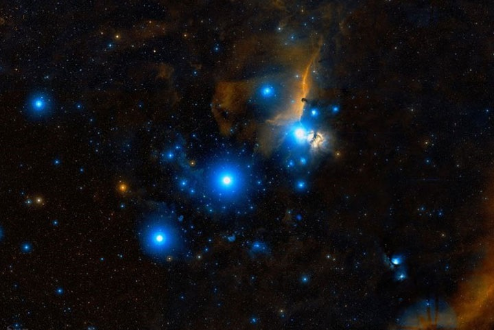
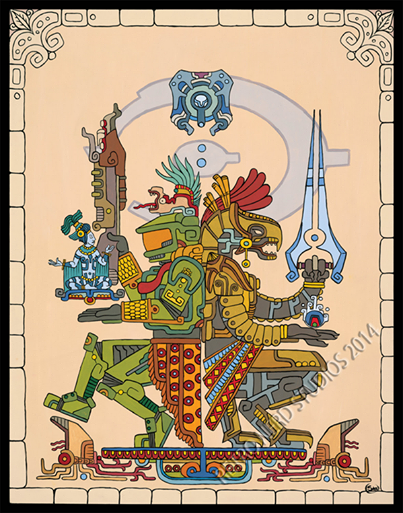

Sera que los gatos eran dioses en la antiguera, y por eso se implementaron estatuas con formas de gato, pero si es así, eran mitad gatos, mitad humanoides

Sabras realmente, de donde provenimos

Seremos una razon de ser en este mundo, o es que somos muy indesafortunados y estamos solos... ¿Que decides creer?